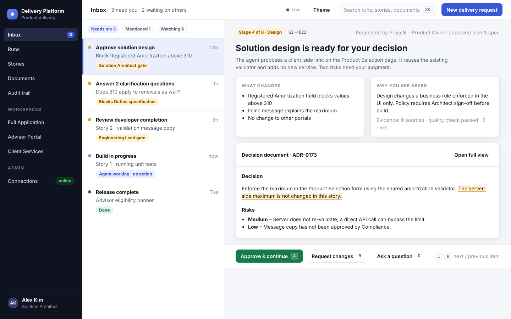
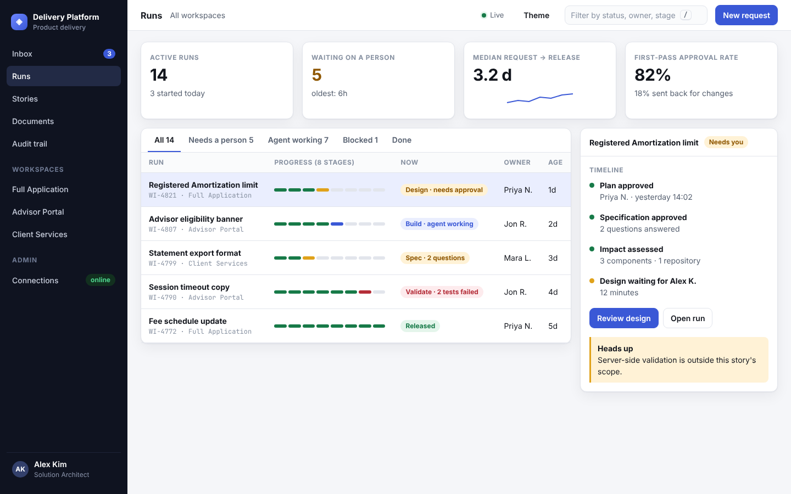
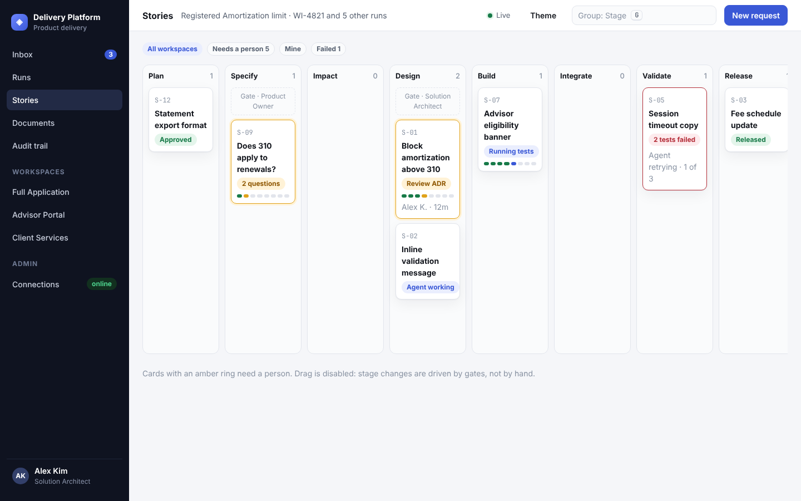
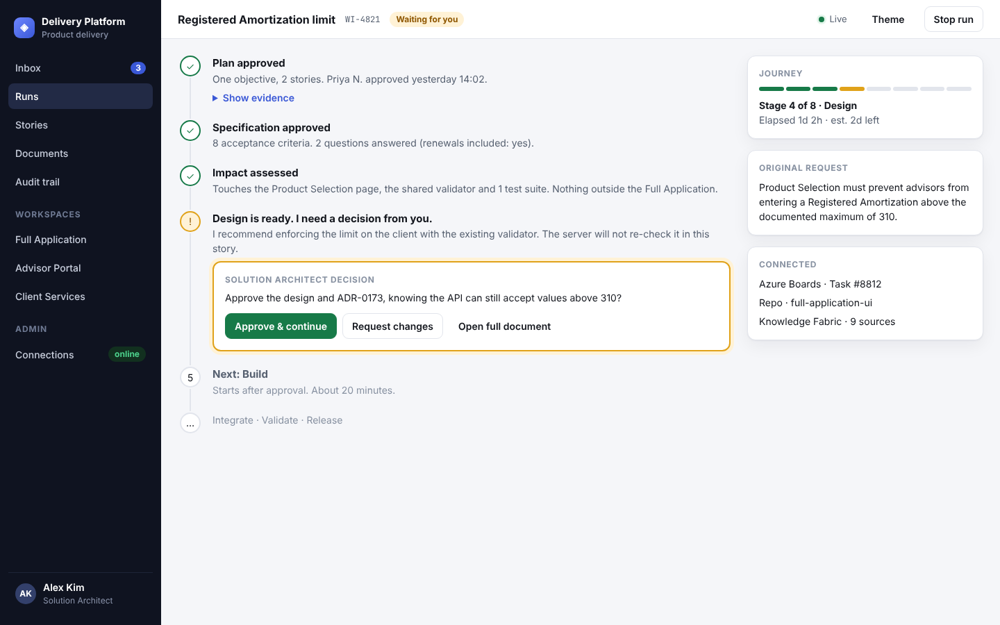
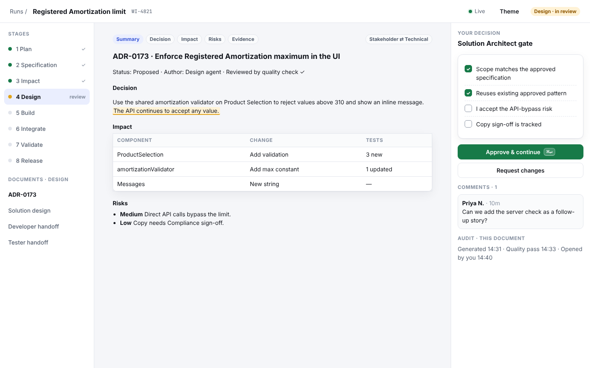
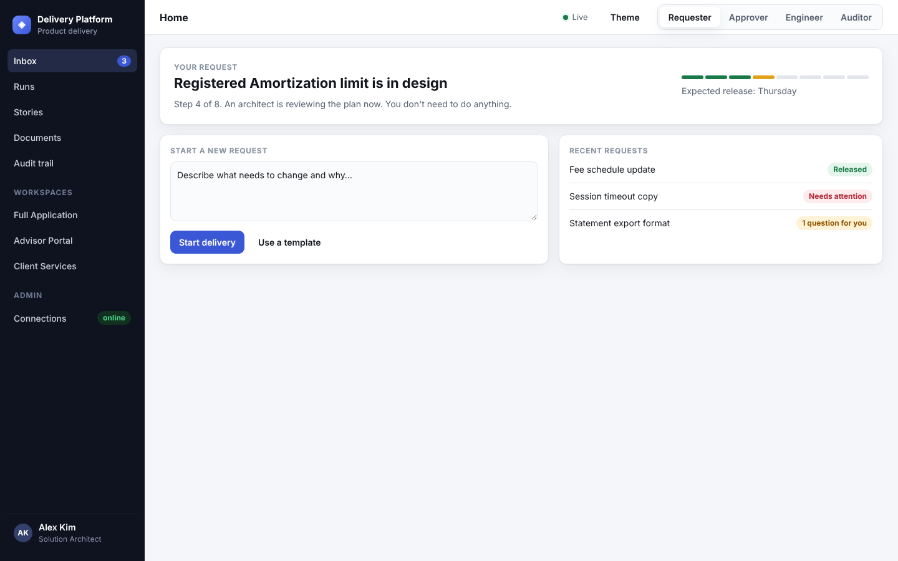

Six ways to answer one question the current console doesn't: "what needs me right now?" All six use the real content from the console (the Registered Amortization request, 8 stages, approval gates) and the same design system, so differences are about structure, not colour.

Approver's to-do list on the left, decision reader on the right, keyboard shortcuts (A, R, J, K).
Best for approvers
KPIs, all runs in a table with 8-segment progress, peek panel for the selected run.
Best for leads
Stories as cards across 8 stage columns with gate markers. Amber rings flag human action.
Best for portfolio view
The run narrated in plain English, decision card inline, evidence one click away.
Best for requesters
Stage list, full-width reader, approval checklist and comments in a rail.
Best for careful review
One product, four views: Requester, Approver, Engineer, Auditor. Clickable switcher.
Best for one product, many usersCombine A + E + F: role lens decides the home screen (approvers land in the Inbox, requesters in the Timeline), and "Review" opens the Workbench. Keep B as the lead/manager dashboard. C is an optional view once there are many stories.
Design inspiration from Refero was not available (subscription inactive), so competitor input is from public docs and write-ups. All screens are static mockups with sample data, not connected to the API.